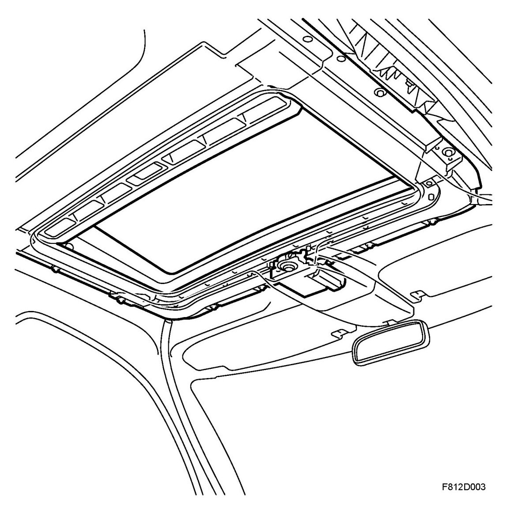
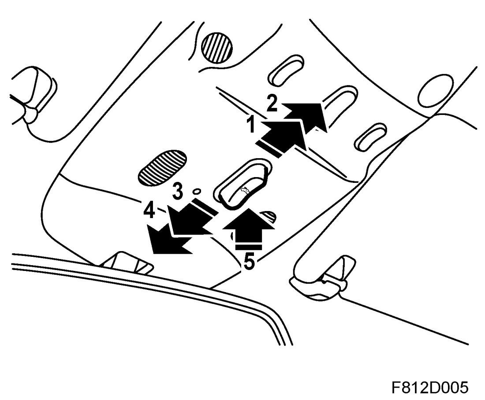
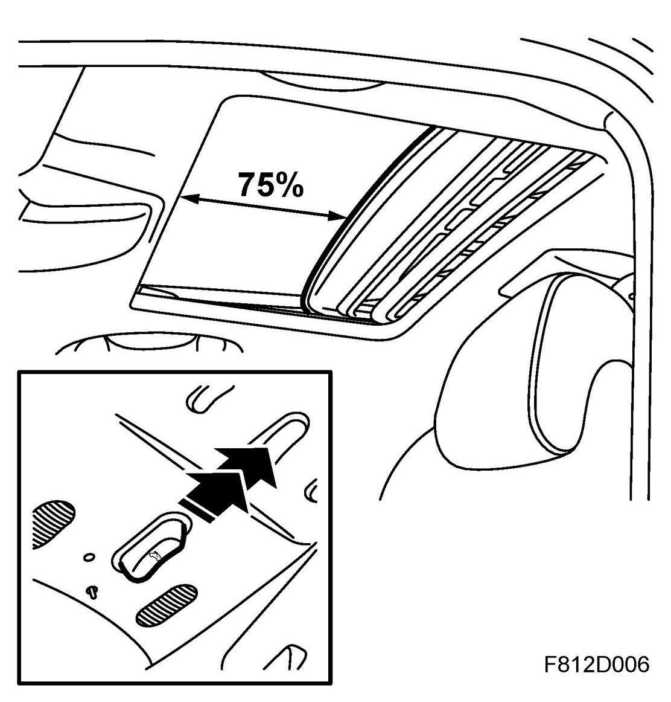
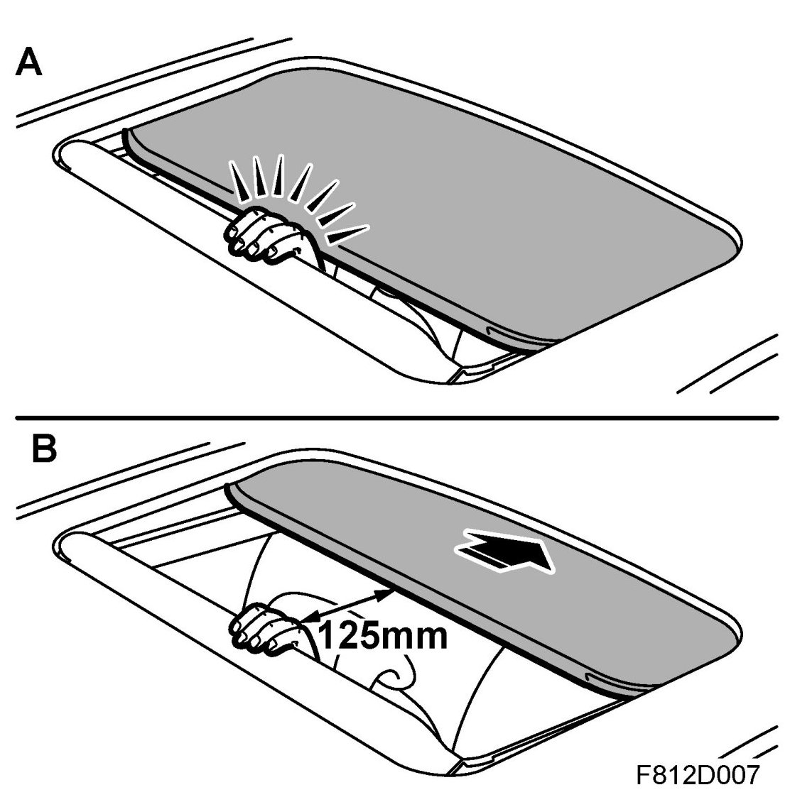
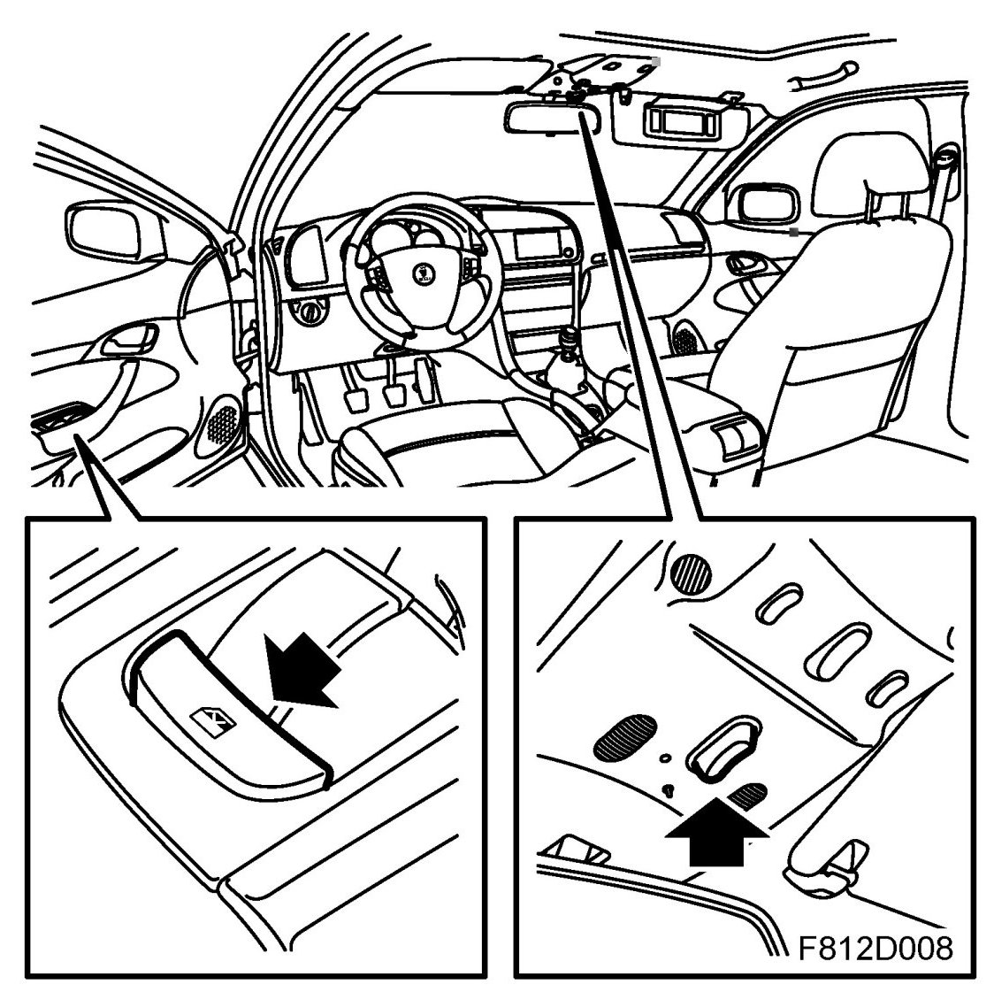
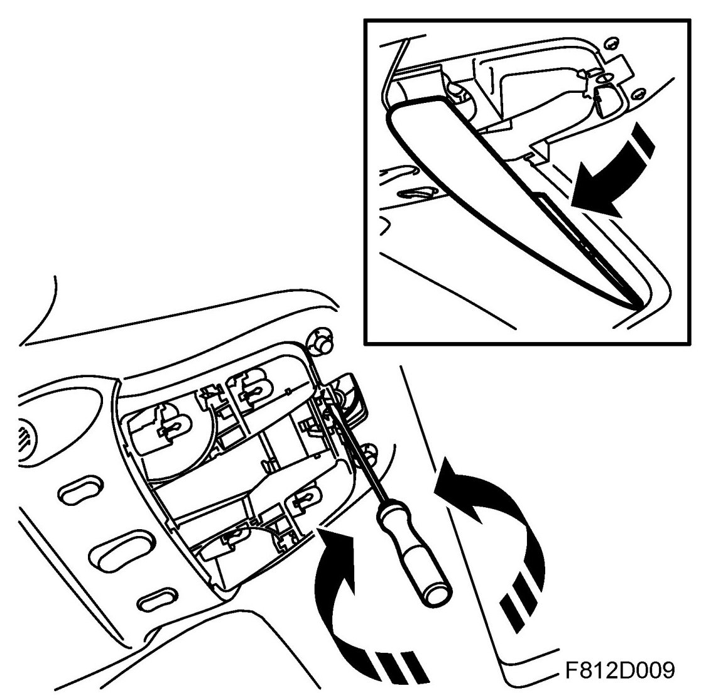
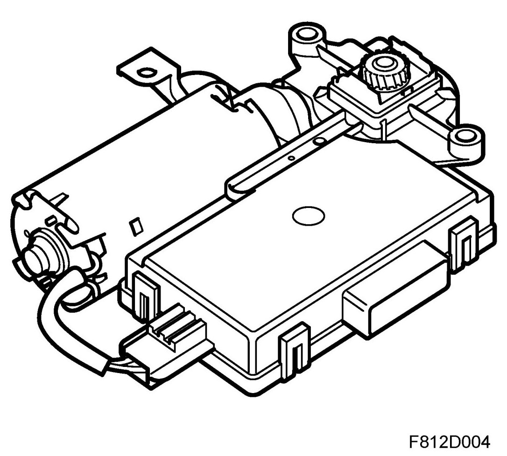
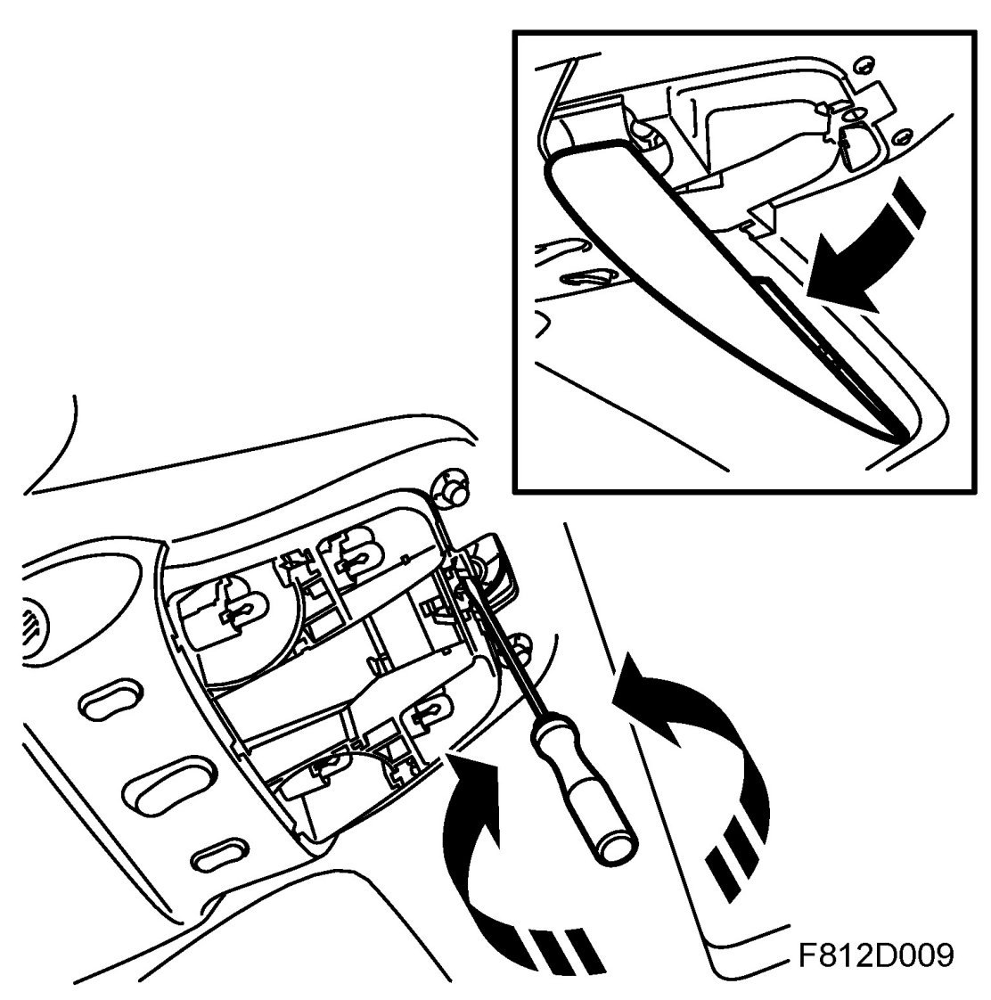
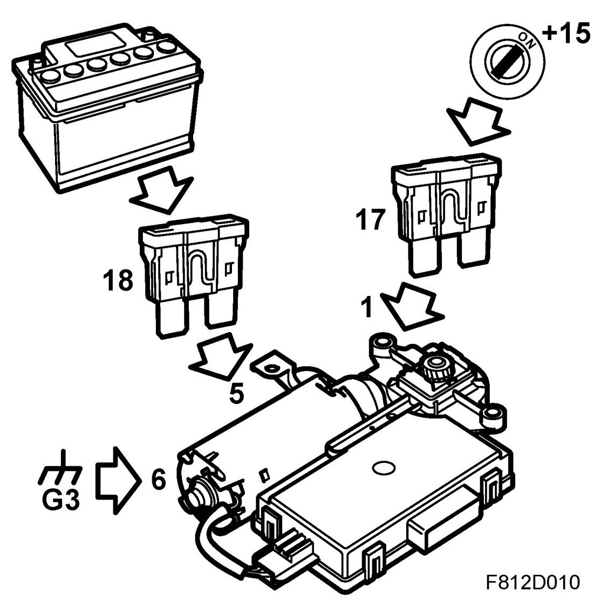

Detailed Description
Detailed Description

Sunroof with pinch protection
The control switch is located on the front roof console. This five-coded resistor switch is powered on pin 2 and sends back the selected position from pin 1. The switch contains 4 resistors that change the voltage depending on the position selected.

To open the sunroof manually, move the switch backward to the first position. Pressing the switch to position two results in a so-called express opening, which maneuvers the sunroof into comfort position automatically (approximately 75% open). The same can be done when closing at position one, closing manually and at position two, express closing i.e. when the sunroof closes completely. To open to tilt position, press the switch upwards. To close, press the switch forwards to position two. The sunroof closes automatically from tilt position.

Auto-opening means that if the sunroof opens, the hatch opens enough so that you can see that it has opened. This is so you will notice that the hatch is open.
Auto-closing means that if the sunroof is closed manually but a slight gap remains, the hatch will close the rest of the distance automatically.
Since the hatch can be closed with express closing, it is equipped with pinch protection. This means that if an object comes between the hatch and the edge of the sunroof, closing is stopped and the window is opened 125 mm, whereby the object will be released. Pinch protection is also available for express closing of tilt position in which case the window opens to full tilt position.

During manual opening and express opening, the sunroof always stops in comfort position, or approximately 75% open. An additional press of the switch towards the rear is required to open the sunroof completely.
Pinch protection can be disengaged due to snow, ice or other obstructions that prevent the sunroof from closing. This can be done by pressing the driver's door child safety button with the ignition on while pressing the roof console switch forwards.

Comfort opening or closing can be done with the remote control; press and hold the opening or closing button until the sunroof is in the comfort position or completely closed.
If the sunroof cannot be closed in the normal manner, there is an emergency closing procedure. Press the pin in the centre groove of the motor shaft with a screwdriver and turn it clockwise for emergency closing. The sunroof is then closed in the forward direction. Turning the motor shaft anticlockwise will open the sunroof.

The control module with motor is located in the front edge of the sunroof assembly. It receives +30 to pin 5 from fuse 18 in the REC. The motor's power ground is with pin 6 via the REC in grounding point G29. The control module with logic is grounded with pin 2 via the REC in grounding point G3. Control module pin 1 is used for bus communication via the REC. The control module has self-diagnostics with its own diagnostic trouble codes.

All logic for the various opening positions is contained in the control module.
The control module sends out the following on the I-bus: Sunroof movement, power consumption, open or closed position.
The control module receives the following on the I-bus: Request for comfort opening, request for comfort closing.
Replacement of a control module requires a thorough check of the hatch position in the sunroof assembly when a new module is delivered with the motor in closed position. See Electric motor for the sunroof.
Sunroof without pinch protection
The sunroof consists of a sunroof frame unit with a glass hatch which is secured on two lifting units. The hatch is cable-driven by an electric motor. The motor is located on the front edge of the sunroof unit.
The sunroof is operated with a switch on the front roof console.
The glass hatch can be slid back and forth as well as be tilted up at the rear. The glass hatch is operated using a three-position switch. When the hatch is closed and the switched is moved to the position for rearward opening for more than 0.4 seconds, the glass hatch opens automatically to the comfort position (83%). To stop the glass hatch while it is opening, press the switch in or press it briefly to the closing position. If the sunroof is stopped in such a way and the switch is again moved to the opening position, the hatch will automatically open to the comfort position. To open the hatch fully you must hold the switch until the hatch is fully open.
Only rearward opening is automatic. For all closing procedures, the switch must be pressed and held.
The sunroof unit is drained via four hoses, one in each corner of the unit.
If the sunroof cannot be closed in the normal manner, emergency closing is available. Press the pin in the centre groove of the motor shaft with a screwdriver and turn it clockwise for emergency closing. The sunroof closes with a forward motion. Turning the motor shaft anti-clockwise will open the sunroof.

+30 voltage
+30 voltage is fed via fuse 18 to pin 5 of the electric motor.

+15 voltage
The electric motor is also fed on pin 1 with +15 via fuse 17. When the ignition is switched off, the electronics of the electric motor going into a power-save mode after a 1 second delay. When the ignition is switched on, +15 voltage wakes the motor electronics and notifies that the ignition is ON.
Ground
The electric motor is grounded via pin 6 to grounding point G3.
Switch
When the switch is activated, the appropriate pin of the electric motor is grounded to achieve the correct movement. The hatch opens when pin 3 of the electric motor is grounded via pin 4 of the switch. When the hatch is to be tilted, pin 2 on the motor is grounded via pin 2 of the switch. The hatch closes when pin 4 of the motor is grounded via pin 3 of the switch.